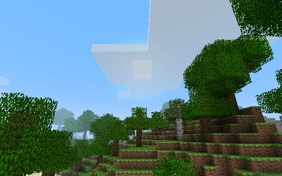
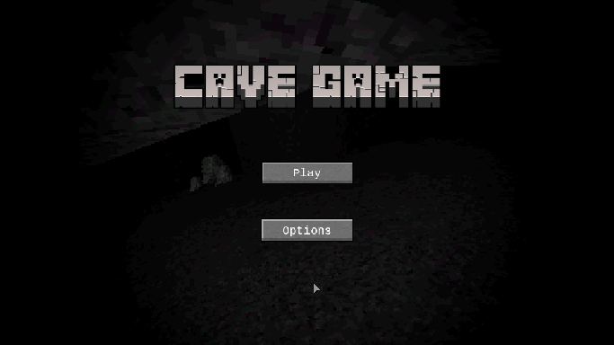
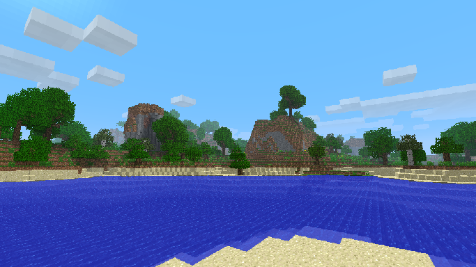
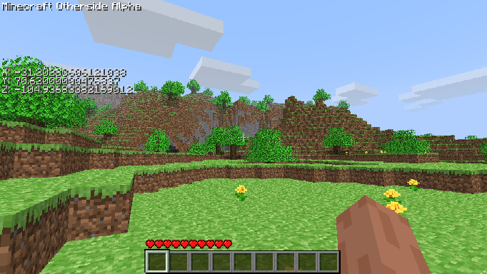
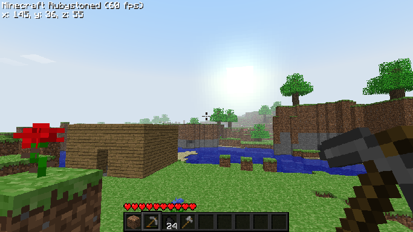

Every programmer has their first game. This is mine!
But wait, this is built on Colbster's Beta 1.3 port, how is this the first game? Well, Old-School was originally built off of the original Beta 1.3 by LAX1DUDE, but unfortunately, I didn't know how to code, and the game became full of errors and bugs I didn't even know about until much later. Only just recently I was able to change the codebase to Colb's version. So yea, you can say i'm bending what defines "original", but its still on the same repository! (Also for some reason the game crashes everytime you make a world, idk why it does that, but if anyone has a fix it would be apperciated!)
Cave Game? Like THE Cave Game?
Nah. It's my second "real" game (starting from the original Old-School). A very basic one at that. Click enemies to kill them and gain points, run around different cave rooms, get the sword and armor, done. Now why did I say "real" game? That's because its made with AI, Rosebud AI! Now before you grab your digital pitchforks and torches, this was made during my earlier years in coding. I was still experimenting, seeing what I could do best at. I haven't touched this game since, well around 2024? I can't remember. Maybe one day I could remake this into a full game (with real code ofcourse.).
Previously known as Minecraft Old-School: ReDefault.
This is my first successful game that I created. There is an earlier version, made on Eaglercraft Beta 1.3, but it has many errors because back then, I didn't know how to code and just winged it. This version however is built on Eaglercraft Beta 1.7.3, and is the defenitive version that actually has stuff. Its an extentsion mod for it, adding new features and stuff for you to find, craft and do in Eaglercraft, things such as new blocks, new mobs, and new items for you to play around with. This mod is inspired by my favorite Golden-Age mods, like Better Than Adventure, Cypress, Not-So Secret Saturday, and more.
Also known as Minecraft New-School.
A work in progress, this mod of Peyton's Eaglercraft Infdev aims to add new features and make Infdev modern-like while keeping some of the features from old-school versions of Minecraft, like the old healing system as an example. It's like a mishmash of both modern and old, all on your browser for you to enjoy!
Minecraft Old-School Part 2 🗣🔥
The true spiritual successor of Old-School, Rubystoned is a mod of Colbster's Indev Port, aiming to add new things while keeping Indev's original charm intact. With special guest Colbster, the owner of the port itself, Rubystoned has better than ever features that even Old-School can't rival yet!